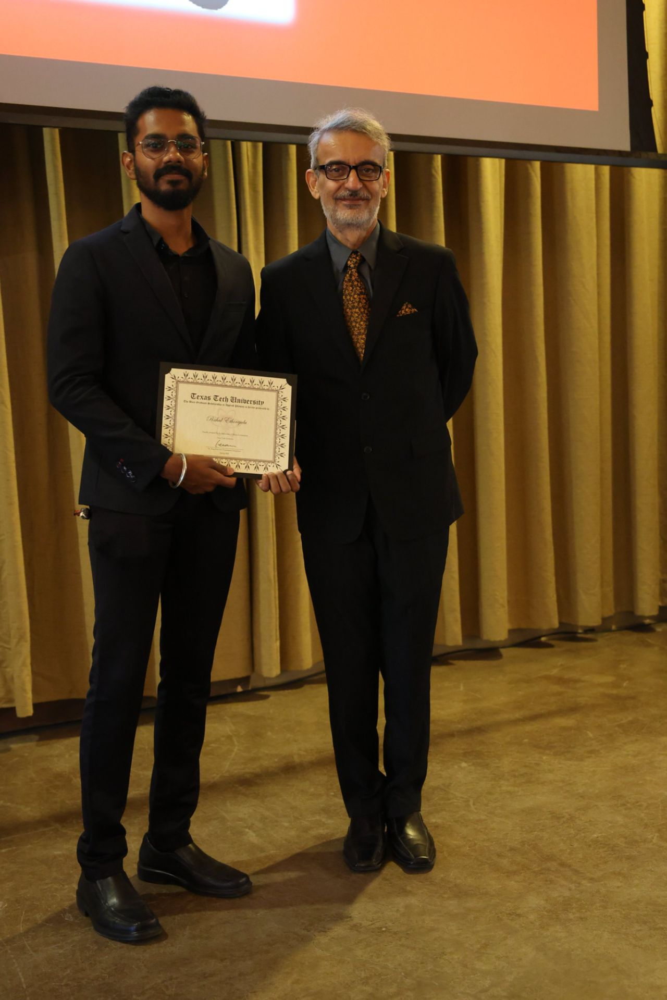

Dwarf novae
My current research with Dr. Michael Fausnaugh focuses on interacting binary stars, accretion disks, and the recurring outbursts of dwarf novae.
Explore dwarf novae research →Texas Tech University · Lubbock, Texas
Ph.D. Physics and Astronomy Candidate & Research Assistant
Hello there, welcome to my site. I am Rahul Ethirajulu, a Ph.D. student in Physics and Astronomy at Texas Tech University in Lubbock, Texas. I am a research assistant working with Dr. Michael Fausnaugh in the Department of Physics and Astronomy.
My current research focuses on dwarf novae and the physics of accreting binary star systems. I also help with TESS operations, running Dr. Fausnaugh's pipeline for difference imaging and generating reference and RMS images.
You can also find me on LinkedIn, where I share milestones, learning updates, and research-related experiences.

My current research with Dr. Michael Fausnaugh focuses on interacting binary stars, accretion disks, and the recurring outbursts of dwarf novae.
Explore dwarf novae research →Master's thesis / 2023–2024
Parameter estimation without explicit use of a template bank, completed as my final-year master's thesis.
Read master's thesis (PDF) →Krittika Summer Projects / IIT Bombay Astronomy Club
Detrending AstroSat CZTI light curves and evaluating signal-to-noise ratios to distinguish GRBs from non-GRB events.
April 2026
Honored at the Physics and Astronomy Department Annual Banquet and 100th anniversary celebration at Texas Tech University.
Read more →